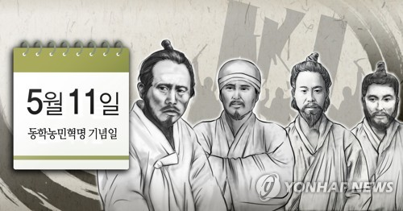
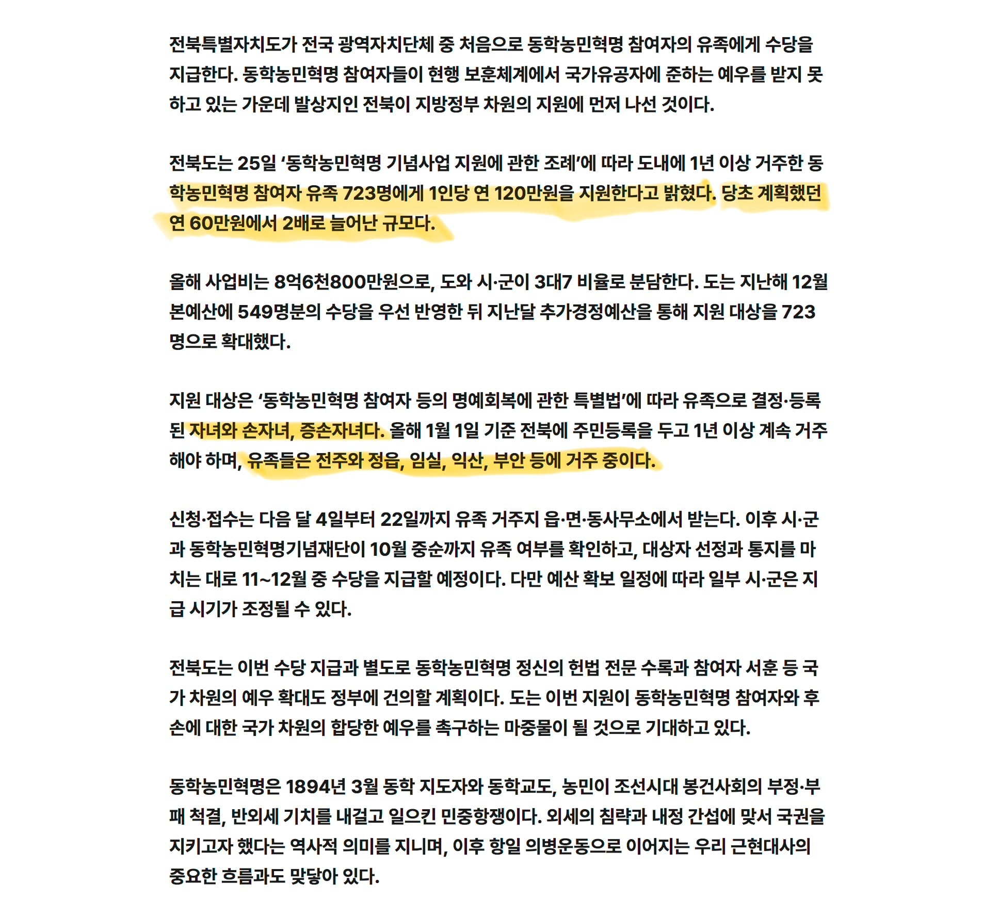
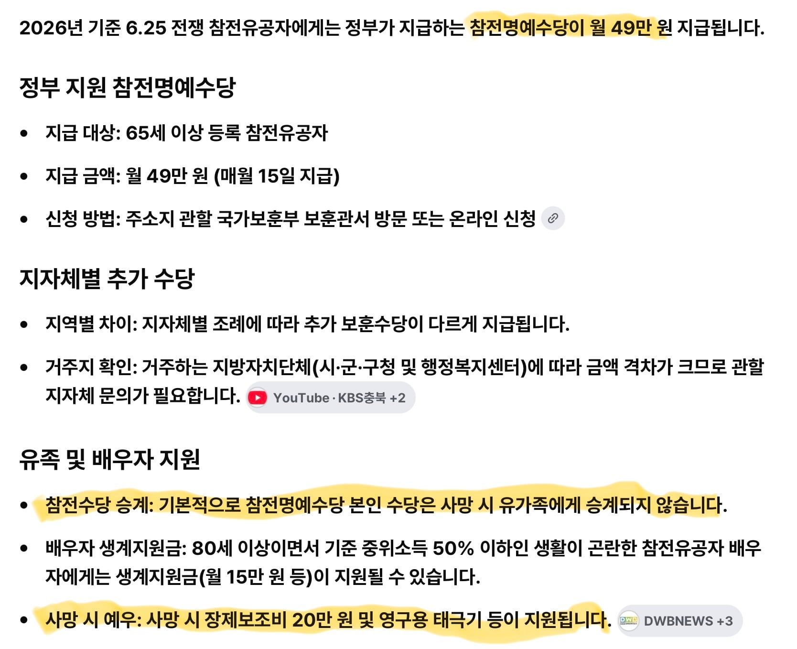

6.25 참전 유족 수당에 대해 살펴 보자

6.25 참전 수당은 본인 에게만 지급 되고 유가족에게는 승계 되지 않는다
본인 사망시 20만 원과 태극기 하나 증정
이게 맞냐


6.25 참전 유족 수당에 대해 살펴 보자

6.25 참전 수당은 본인 에게만 지급 되고 유가족에게는 승계 되지 않는다
본인 사망시 20만 원과 태극기 하나 증정
이게 맞냐
댓글
수집 당시 댓글 37개
개드립콘쓰려고가입 · 12 시간 전
무신정벌 지원금도 신속히 부탁합니다
짱구조아 · 12 시간 전
젬버리도 그렇고 신안도 그렇고 전라도는 예산이 남아도나봐? ㅋㅋㅋ
오진당 · 12 시간 전
(곧 대구 밀라노 꺼억 대댄글로 불탈 댓글 입니다)
도롱도롱도로로롱 · 12 시간 전
씨발 내가 김해김씨 김유신 장군 직계 자손인데 나도 줘라 우리 김유신 장군님이 삼국통일 막대한 공이 없었으면 고려가 있고 조선이 있었겠냐
가마누 · 8 시간 전
나도줘라 김유신 없었으면 이나라가 부정이다
햄스터만보면닥추 · 12 시간 전
재정자립도 최하, 좆도 이상한 명분으로 세금으로 지원금 주고 표팔이
챰새 · 12 시간 전
삼별초 유족 지원금 없나요 저지금급함
오도짜세 · 12 시간 전
근데 진짜 왜 줘 ㅋㅋㅋㅋ
우디 · 12 시간 전
전라도야 또
현실에서할수있는말만하자 · 12 시간 전
나라가 옳게 됐군요
MS08소대 · 12 시간 전
130년 전 일이라고 해서 무조건 의미가 없다는 얘기가 아니라 현재 객관적으로 확인할 수 있는 사료와 일관된 기준이 있느냐가 핵심임 당장 불과 수십 년 전인 6.25전쟁 참전자와 유가족조차 아직 공적과 신원이 제대로 확인되지 않은 사례가 있고 생존 참전용사 가운데 경제적으로 어려운 분들도 적지 않음 그런데 사료가 거의 남아 있지 않은 130년 전 사건까지 후손을 특정해서 보상하겠다고 하면 대체 어디까지를 기준으로 할 건지부터 설명해야 함 그 논리대로라면 동학농민운동만 특별하게 다룰 이유가 없음 임진왜란의 의병과 전투 참여자 더 거슬러 올라가 귀주대첩, 살수대첩 등 국가를 위해 싸운 사람들의 후손까지 어디까지 인정하고 보상할 것인지 명확한 선이 있어야 함 실제로 우리 집안도 고려, 조선시대부터 무과 급제자를 배출했고 임진왜란 당시 직계와 방계가 경상도 일대 전투에 참여했다가 상당수가 전사하면서 집안의 기록과 기반이 크게 사라졌음 일제강점기에도 독립운동에 참여하면서 집안이 몰락했고 관련 자료가 거의 남아 있지 않아 후대에 다른 사람의 행적을 조사하다가 우연히 집안의 행적까지 확인돼 뒤늦게 인정받은 경우임 그런데 만약 몇백 년 전 조상이 국가나 사회를 위해 희생했으니 후손에게 현재의 보상을 해줘야 한다는 기준을 인정한다면 우리 집안 역시 당연히 대상이 되어야 함 그런데 나부터 그런 보상을 요구하지 않음 조상들이 의로운 일을 하다 희생한 것과 그 후손인 내가 오늘날 세금으로 보상을 받아야 한다는 건 전혀 다른 문제라고 보기 때문임 역사적 사건을 기념하고 연구하는 것과 후손에게 경제적 지원을 하는 것은 반드시 구분해야 함 전자는 충분히 할 수 있지만 후자는 객관적인 사료와 대상자 특정, 공적 확인, 법적 근거와 형평성이 필요함 그런 기준도 제대로 세우지 않은 채 특정 역사적 사건만 끌어와 후손 지원을 추진한다면 결국 다른 역사적 희생자들과의 형평성 문제를 피할 수 없음 이 기준을 인정하는 순간 임진왜란뿐 아니라 그 이전의 전쟁과 전투까지 계속 보상 범위를 넓혀야 하는데 그걸 어디서 끊을 건지도 설명해야 함 조상의 희생을 존중하는 것과 그 희생을 후손의 현재 권리로 만들어 세금으로 보상하는 것은 별개의 문제임 이 둘을 구분하지 않는다면 역사적 정의가 아니라 정치적 명분에 불과하다는 비판을 받을 수밖에 없다고 봄
내일까지 · 9 시간 전
진짜 글 잘쓴다... 이런 능력 부럽다 ㄹㅇ
작곡붕이 · 5 시간 전
그야 누가봐도 정치적 명분이니까.
하위헌스 · 12 시간 전
간장게장파 · 11 시간 전
동학 그거 일진회 아닌가?
걱정만잔뜩인찐찌버거 · 11 시간 전
ㅋㅋㅋㅋ진짜 이거 실화냐.. 지금 살아계신 참전용사님들한테나 좀 다퍼줘라
틀니딱딱사이트 · 11 시간 전
잼버리에 동학농민 털어먹고 반도체까지 꺼억 시도중 ㅋㅋㅋ 좋아할래야 좋아할수 없는 씨발지역 ^^
산업핵폐기물 · 10 시간 전
동학농민은 씨이팔 ㅋㅋㅋㅋㅋㅋ
파빵 · 10 시간 전
장난치나 6.25 유공자나 제대로 챙기지
아무닉 · 10 시간 전
이건 전라도 사람들도 분노해야되는거 아님..? 실드칠께 있나
심술궁뎅이 · 10 시간 전
왜 라도를 싫어하는지 알겠다
눈팅만했지가입은처음인데 · 10 시간 전
진짜 혐오스럽네
분석가 · 10 시간 전
하는짓거리들이 아무 생각 없던 사람들도 지역감정 제발 생겨주세요 욕해주세요 하고 지들 스스로 무릎 꿇고 비는 수준ㅋㅋㅋ 그래놓고는 지역 비하하지말래 ㅅㅂ 진짜ㅋㅋㅋ
앙제컷 · 9 시간 전
임진왜란 참전수당은 왜안줌?
F9 · 9 시간 전
진짜 처돌았나?
왕가슴 · 9 시간 전
지역갈등이나 혐오가 왜 생기냐면 이런게 수십개 수백개 쌓여서 생긴 결과라고 보면 됨 공정이 가장 중요한 사회가 대한민국인데 특정 지역과 이권층만 공정은 ㅈ까고 세금은 별로 내지도 않는데 세금을 혼자 다 타가고 있음
털달린바퀴벌레 · 8 시간 전
나랏돈 털어먹기가 이렇게 쉽다 ㅋㅋ
니체 · 8 시간 전
좆병신 국가 꼬라지 봐라 씨발 ㅋㅋㅋ
유메노아이카찹살젖통 · 8 시간 전
뭐라하면 일베충으로 몰아가는 문화땜에 비판못함
온천두부정식 · 8 시간 전
조선 망하는데 쐐기박은 이벤트가 뭔 ㅋㅋ
무슈슈 · 8 시간 전
이무슨
게개개개 · 7 시간 전
동학운동도 이거랑 비슷한 짓해서 일어난건데 이건 현대 예술에 가깝네
울산깡촌 · 5 시간 전
'전'
울산깡촌 · 5 시간 전
'경'
댓글은똥이야 · 5 시간 전
정말 혐오스러운 짓을 하면서 혐오하지말라니 성인군자도 욕나오겠구만 뭔 ㅋㅋ
붐업단2 · 5 시간 전
반란군에 왜 준다는거야
니시미야코노미 · 3 시간 전
발상부터가 엽기적임ㅋㅋ